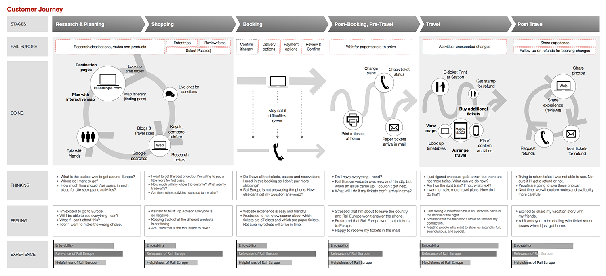
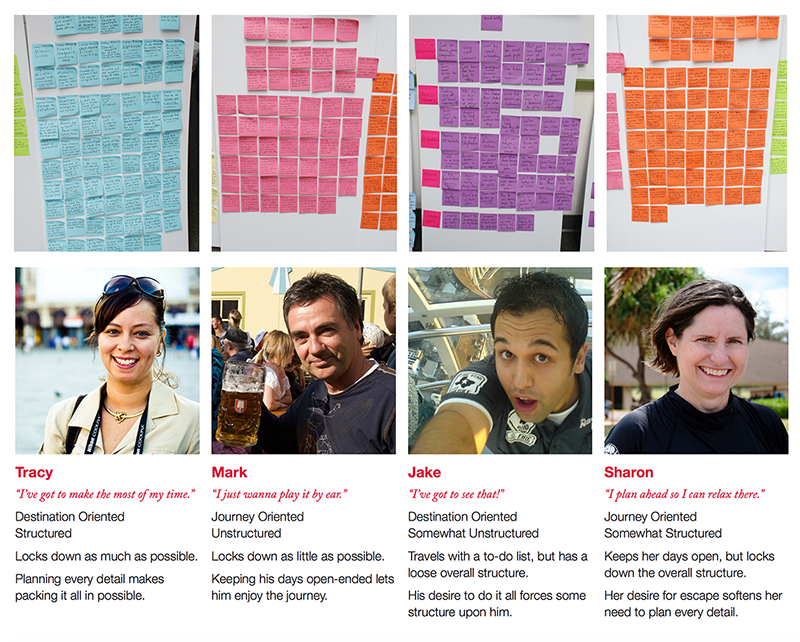
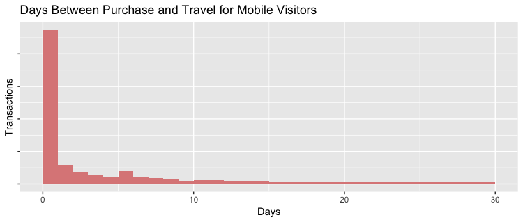
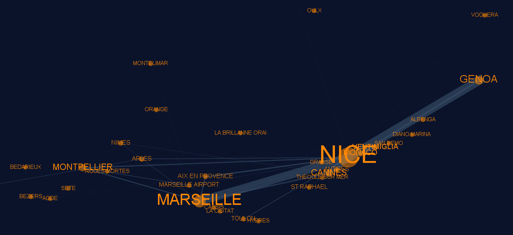
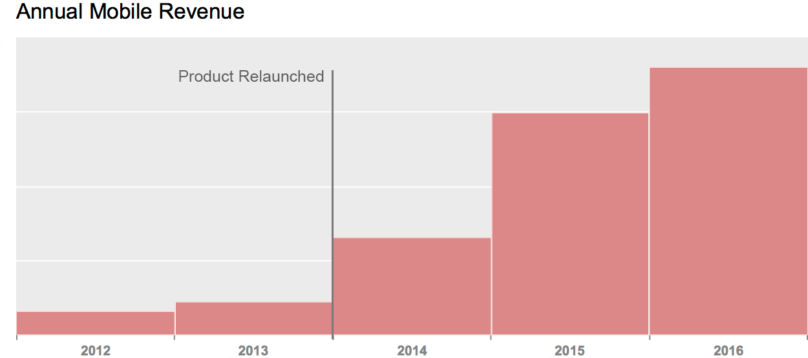

<div class="container">
  <section class="row">
    <div class="col-lg-8 col-lg-offset-2 col-md-8 col-md-offset-2 col-sm-10 col-sm-offset-1">
      <h2>Background</h2>

      <p>Rail Europe's early consumer mobile efforts had not gained traction, satisfied customers' needs or delivered the anticipated business benefits. Compounded by an inflexible waterfall delivery model and high technical debt, they decided to rethink their mobile products.</p>

      <h2>Process</h2>

      <p>I needed to refocus Rail Europe's mobile products on customer problems for which mobile solutions could be <b>uniquely valuable</b>, and where those solutions could contribute directly to our business' <b>strategic goals</b> of improving customer satisfaction, improving employee satisfaction, growing revenue, and increasing profitability.</p>

      <p>Surveying 2,500 customers, and conducting phone or in-person interviews with 12 participants, we mapped-out our <b>customers' experience</b> with us: a comprehensive picture of the journey from planning and purchasing to traveling, the channels that customers used, and how relevant, useful and enjoyable they found our touchpoints at each step.</p>

      

      <p class="image-caption">I used experience mapping to identify product opportunities.</p>

      <p>We particularly looked for gaps between how customers rated the relevance of Rail Europe to their task and the helpfulness of Rail Europe: a gap indicated an under-exploited <b>opportunity for our product</b>.</p>

      <p>For travelers who prefer to plan in advance, there was an opportunity to enhance our omni-channel experience: to make it seamless for customers to move between our desktop website and mobile app channels.</p>

      <p>For more spontaneous customers, there was an opportunity to grow revenue from last-minute mobile sales in Europe.</p>

      <p>And for all customers there was an opportunity to extend the life of the relationship with Rail Europe by providing them ways to manage their itinerary easily, while also helping them discover and purchase exciting, relevant experiences while in Europe.</p>

      

      <p class="image-caption">Real customers' survey responses provide the behavioral insights to build our personas.</p>

      <p>We <b>developed personas</b> around the buying behaviors surfaced by our research, and, using analytics from existing Rail Europe properties, I was able to size our personas and gain <b>quantitative support</b> for the behavioral pattern represented. Seeing, for example, that purchasers on mobile devices were mainly buying same-day travel, I could <b>size the market</b> for a last minute-oriented app and <b>define objectives</b> by which I would measure our success.</p>

      

      <p class="image-caption">Data on price sensitivity, advance purchasing, number and age of travelers, propensity to upgrade and much more helps me to support the behavioral patterns in my personas quantitatively.</p>

      <p>Fleshing out our personas' goals, and leading ideation of usage scenarios, I defined a feature set that could support those goals, built consensus among executives, developers and designers on priorities, and laid out the <b>roadmap</b> for product development.</p>

      <p>I introduced tools, like Balsamiq and Flinto, to help us move efficiently from feature definition to design, through sketching and </b>storyboarding</b>, <b>wireframing and mockups</b> so that we could quickly test low-fidelity prototypes internally, and get <b>high-fidelity prototypes</b> in front of the public in <b>field-based usability tests</b> and <b>moderated remote studies</b>. I coded my own prototypes, and encouraged everyone on the product team to do the same.</p>

      

      <p class="image-caption">I work closely with interaction/visual designers to move quickly between sketches, wireframes, mockups and prototypes.</p>

      <p>My team was the first at Rail Europe to use <b>agile methodology</b> (Scrum) to deliver our products (which we later evangelized throughout the business) and the first to use Lean principles like <b>Minimum Viable Product</b> and the Build-Measure-Learn cycle to help us manage our roadmap. We really do stand up in our standups.</p>

      <p>As a <b>data-driven team</b>, we ran the first A/B and MV tests in production at Rail Europe to validate our feature design decisions and improve upsell effectiveness, then expanded our <b>hypothesis testing</b> to other areas, like measuring the effect of cognitive biases like price relativity and decoy effects on our supplementary service uptake. I established new best practices for experiments and web analytics, and created a repository of SQL and R code for advanced analytics. I trialled analyses in graph theory to <b>improve trip recommendations</b> to customers.</p>

      

      <p class="image-caption">Modularity analysis helped me to improve the quality of trip recommendations for our customers.</p>

      <h2>Results</h2>

      <p>We delivered mobile products with a 200% <b>increase in conversion</b>, by rigorously optimizing the sales proposition and checkout flows.</p>

      <p>We <b>increased the average order value</b> by encouraging an extra 7% of users to purchase an additional trip, by increasing uptake of add-on services by 25%-points, and by increasing the market share of premium products through upselling by 6%-points.</p>

      <p>The result of this approach was 2017 revenue <b>10x</b> than the year prior to relaunch.</p>

      


      </div><!-- /.col-md-8 col-md-offset-2 text-center-->
  </section><!-- /.row -->

</div><!-- /.container-fluid -->
